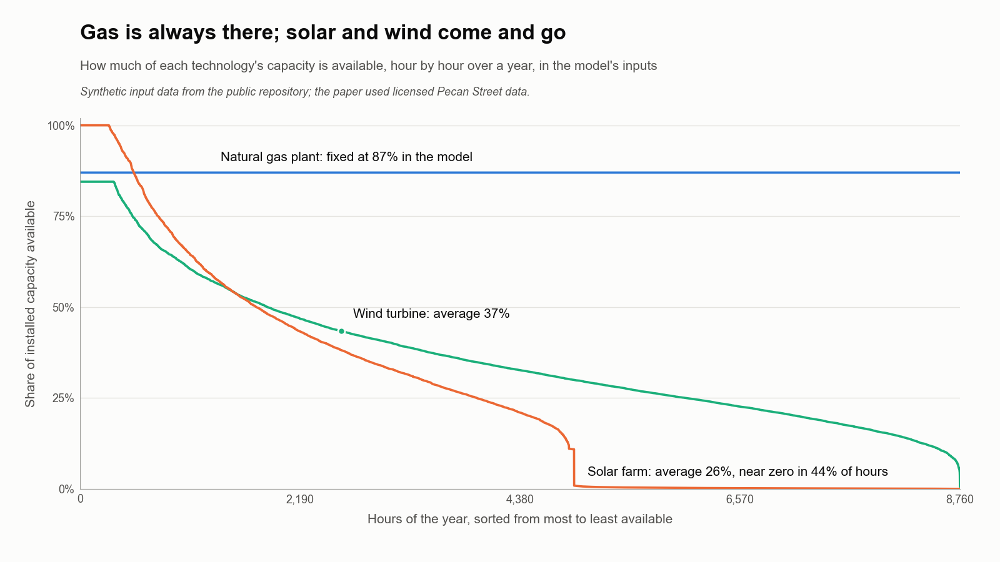
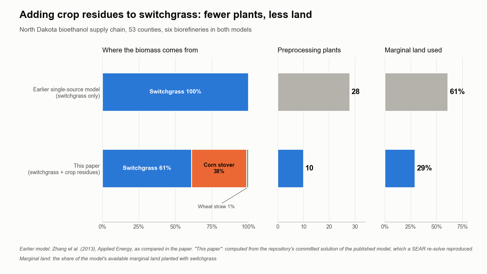

Energy Systems
How Texas's changing power grid ripples through the rest of the energy system, from factories and cars to electricity prices.
- Active
- 2020–present
- ERCOT
- Energy modeling
- Electrification
- Distributed energy
- Supply chains
![Two charts. Left: stacked bars for 2020 to 2050 showing how Texas electricity generation differs between the solar-and-wind targeted scenario and the reference. Wind (blue) and solar (orange) add up to about 0.9 EJ above zero by 2035; natural gas (green), coal (yellow) and nuclear and other (pink) fall below zero by up to about 0.45 EJ; black dots show a net gain of about 0.4 EJ. Right: horizontal bars for 2050 energy use by sector: buildings +0.03 EJ electricity and -0.03 EJ gas; industry +0.18 EJ electricity, -0.14 EJ gas and -0.05 EJ refined liquids; transportation +0.07 EJ electricity and -0.14 EJ refined liquids.](img/hero.png)
In plain English
Texas runs most of its own power grid, ERCOT, and leads the country in wind and solar power. Planners need to know what that changing grid means beyond the power plants: for the price of electricity, for the fuels that factories and vehicles burn, and for communities that build their own generation. Answering that takes models that work together, because a detailed grid model sees little of the wider economy, and an economy-wide model sees the grid only coarsely.
The work began with a 2020 study of how community-owned wind and solar change a utility's costs and prices. A 2025 paper then linked NREL's ReEDS grid model to the economy-wide GCAM-USA model for Texas. Raziye Aghapour's work uses NREL's ReEDS model at county-level detail to test transmission plans for Texas: for example, whether the lines ERCOT has proposed for carrying West Texas wind and solar to the cities reduce wasted (curtailed) renewable power, compared with letting the model choose its own upgrades. She also screens which uncertain inputs, from technology costs to fuel prices, move ERCOT electricity prices most, and builds the tools that turn GCAM-USA demand projections into the hourly loads a grid model needs.
Main points
- Links a detailed grid model (ReEDS) with an economy-wide model (GCAM-USA), so a Texas grid scenario can be traced into buildings, industry and transportation.
- Looks at the grid from both sides: the utility that must meet demand every hour, and the communities and large customers that may generate their own power.
- Student analyses have mapped Texas power plants by size, age and fuel and traced the transmission corridors in ERCOT's long-term plans, giving the models a checked picture of today's system.
- Current work runs hundreds of grid-model scenarios to find which inputs, from fuel prices to electrification, matter most for ERCOT prices; results will be shared once published.
- The tools behind it, including a converter from GCAM-USA demand to hourly grid-model loads, are being prepared as reusable lab code.
Interactive demoThe Texas grid →
Papers
A greener Texas grid barely changes what factories and cars burn
Aghapour, R., Alavi, S., Atitebi, O.S., & Jones, E.C., Jr. (2025). Texas power system evolution and sectoral energy demand: Contrasting sector-specific and multi-sector model outcomes. Proceedings of the IISE Annual Conference & Expo 2025. https://www.proquest.com/openview/fb47c6b94c33e0e25a48f3549c46ac0e/1
Detailed Texas wind and solar plans cut coal and gas power in an economy-wide model, but industry and transport still run on fossil fuels.
- The solar-and-wind targets taken from ReEDS grow from 5.2 GW of solar and 23.1 GW of wind in 2020 to 75.2 GW and 88.6 GW in 2050, or 0.59 and 1.30 EJ of generation a year.
- With those targets, coal generation drops sooner than in the reference scenario and natural gas generation is lower from 2025 on, while nuclear, hydro and rooftop solar barely change.
- Electricity use rises slightly in buildings, industry and transportation, the only fuel that grows in every sector.
- Industry and transportation stay dominated by natural gas and refined liquids; in 2050 the model's industry uses about 0.18 EJ more electricity and 0.14 EJ less gas, out of roughly 7 EJ in total.
Correction note. The abstract says buildings show the strongest shift toward electrification; the model outputs show industry gains the most electricity (+0.18 vs +0.03 EJ in 2050). Section 5.2 says transportation's gas use falls; in the data it rises slightly from a tiny base, and it is refined liquids that fall.
Testing Texas energy policy on the whole economy, not just the grid
Aghapour, R., Alavi, S., Atitebi, O., & Jones, E.C., Jr. (2025). Achieving sustainable energy transition: A system analysis approach to energy policy implementation. Proceedings of the IISE Annual Conference & Expo 2025. https://doi.org/10.21872/annual2025_6968
An EPA scenario tool traces how state energy policies would shift emissions, air quality, health and energy prices across Texas.
- Uses GLIMPSE, the EPA's front end to the GCAM-USA model, to simulate Texas energy policies across the energy sector and the sectors that depend on it.
- Reports how the policies change greenhouse gas emissions, air pollution, health outcomes and energy prices.
- Adds a sensitivity analysis to find target levels for alternative energy sources.
What happens to a utility when communities build their own power
Jones, E.C., Jr. (2020). Decomposing systems: Illustrating the utility of distributed energy resources with decomposition techniques. Proceedings of the 2020 IISE Annual Conference. https://www.proceedings.com/content/076/076356webtoc.pdf
When communities build their own wind and solar, they pay less per kilowatt-hour, while the utility must raise prices for everyone else.
- In every scenario the utility met demand with natural gas alone, because gas is available whenever it is needed and solar and wind cannot cover every hour.
- Communities that built their own wind or solar paid less per kilowatt-hour than the utility's price, and still bought power from the utility when their own output fell short.
- As more communities generated their own power, the utility sold less and had to raise its price to its remaining customers, a result that holds after the 2026 correction.
- Splitting the system into one utility model and one community model let all 40 identical communities be solved with a single community problem.

Crop leftovers could make North Dakota's ethanol supply chain leaner
Alavi, S., Evans, T., Atitebi, O., Javaheri, A., Fand, Y., & Jones, E.C., Jr. (2024). Multi-source biofuel supply chain network optimization. Proceedings of the IISE Annual Conference & Expo 2024, 1725–1730. https://doi.org/10.21872/2024iise_7959
Adding corn stover and wheat straw to switchgrass lets a North Dakota ethanol network use 10 preprocessing plants instead of 28, and less land.
- The optimal network opens six biorefineries of 380 million liters a year each, as in the earlier switchgrass-only model, in Cass, Grand Forks, Mountrail, Richland, Rolette and Walsh counties.
- It opens 10 preprocessing plants, the minimum the model allows, instead of 28; crop residues ship straight from 10 farm counties to the biorefineries without being densified first.
- Switchgrass still supplies 61% of the biomass, corn stover 38% and wheat straw 1%.
- The switchgrass is grown on 29% of the available marginal land, against 61% in the switchgrass-only model, freeing land for other uses.
Correction note. The paper prints the network's total cost as $1.21 billion. Re-solving the published model gives $1,121,384,981, so the printed figure appears to be a transposition of $1.12 billion.

Code and materials
People
- Erick C. Jones Jr., PhD, PEPrincipal Investigator · SEAR Lab directorin
- Raziye AghapourAuthor, Proceedings of the IISE Annual Conference & Expo 2025 2025in
- Sarasadat AlaviAuthor, Proceedings of the IISE Annual Conference & Expo 2025 2025 · Author, Proceedings of the IISE Annual Conference & Expo 2024 2024
- Oluwatosin Stephen AtitebiAuthor, Proceedings of the IISE Annual Conference & Expo 2025 2025 · Author, Proceedings of the IISE Annual Conference & Expo 2024 2024
- Toryon EvansAuthor, Proceedings of the IISE Annual Conference & Expo 2024 2024in
- Atusa JavaheriAuthor, Proceedings of the IISE Annual Conference & Expo 2024 2024
- Yash FandAuthor, Proceedings of the IISE Annual Conference & Expo 2024 2024
Current team: names to be added from the lab personnel sheet. Profiles marked in link to LinkedIn. More past and present lab members are on the SEAR Lab team page.